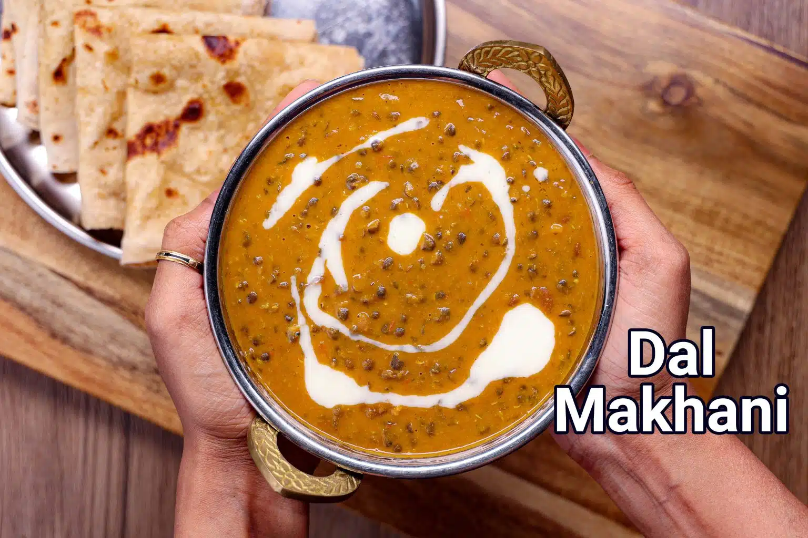

Dal Makhani curry
Dal Makhani Recipe | Restaurant Style Dal Makhani Recipe

Description
Dal makhani has always been of the favorite dal recipes coming straight from the rich and flavourful Punjabi cuisine. More often this dal recipe is served with plain rice or jeera rice, however, this can also be served with rotis and garlic butter naans. This creamy dal recipe has been hugely popularised by the migrating Punjabi community within India and across the globe.
Firstly, the first and essential step for this recipe is soaking the lentils and beans overnight. However, if you ever forget, you may try the canned lentil and kidney bean option. I am not a huge fan of it, yet it would save a lot of time. Secondly, for an authentic and earthly taste, prepare the dal in a clay pot or oven. I do not have access to it, so I have used my normal non-stick pan, but clay pots are highly recommended. Lastly, due to the combination of lentils and beans, the consistency may thicken once it is rested or loses its heat. You may add water and bring it to a boil so that it becomes thin. Also, if you feel it is too thin, you may boil and cook it for several minutes so that it gets thick again.
Ingredients
for pressure cooking dal:
- ¾ cup whole black urad dal / whole urad dal
- ¼ cup kidney beans / rajma
- water for soaking
- 3 cups water, for pressure cooking
- alt to taste
for dal makhani recipe:
- 1-2 tbsp ghee / clarified butter
- 1 bay leaf / tej patta
- 2 large tomatoes, finely chopped
- 1 tsp ginger-garlic paste
- ½ tsp turmeric powder
- 1 large onion, chopped
- 1 tsp coriander powder
- ½ tsp cumin powder
- 1 tsp kashmiri chilli powder, or as per your spice level
- salt to taste
- 1 cup water, or as required
- 2 tbsp fresh cream, or as required
- few coriander leaves, chopped
for tempering:
- 1 tbsp ghee / clarified butter
- generous pinch hing / asafoetida
- ¾ tsp kashmiri red chilli powder
- ¼ tsp garam masala, optional
Steps
Pressure cooking dal recipe:
- Take 1 cup of black urad dal and ¼ cup of rajma in a large bowl.
- Add enough water and soak overnight or atleast for 8 hours.
- Rinse the dal in a running water and transfer into a cooker. add 3 cups of water.
- Also add some salt to taste.
- Close the lid and pressure cook on medium flame for 5 whistles. or till the dals are cooked completely.
Dal makhani recipe:
- In a large kadai add a tbsp of ghee and saute bay leaf for a minute. or till they turn fragrant.
- Then add finely chopped onions and saute till they change in colour.
- Once onions are done, add ginger-garlic paste. saute till raw smell disappears completely.
- Now add chopped tomatoes and cook till they are soft.
- Add turmeric, coriander powder, cumin powder, chilli powder and salt to taste. cook the masalas for a minute.
- Once the masalas start releasing oil from sides, add cooked dal and give a good stir.
- Adjust the consistency by adding 1 cup of water or as required.
- Boil for 15 minutes or more till the dal absorbs flavour and turns thick.
- To get the creamy texture, add 2 tbsp of fresh cream. you can also skip or increase the amount of cream according to your preference.
- Top up with fresh coriander leaves.
Tempering recipe:
- Heat tadka pan, and add a tbsp or more ghee. once it begins to melts, add hing.
- Also add chilli powder and garam masala (optional). fry for 2-3 seconds.
- And immediately pour the tempering over dal makhani. give a good mix to get bright colour and flavour.
- Serve dal makhani with jeera rice or garlic naan.